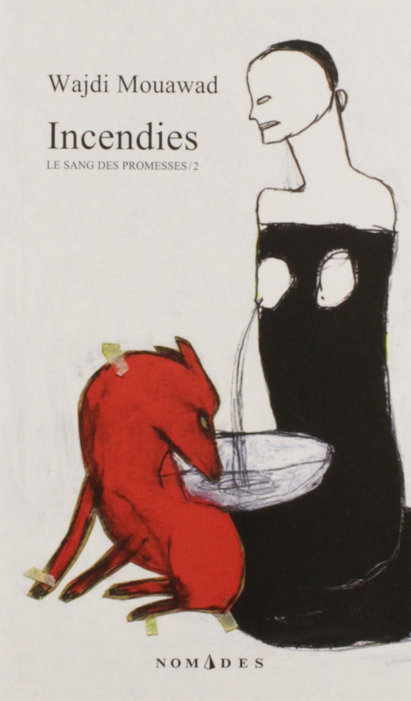

Bienvenue!
Description du livre: Lorsque le notaire Lebel fait aux jumeaux Jeanne et Simon Marwan la lecture du testament de leur mère Nawal, il réveille en eux l'incertaine histoire de leur naissance : qui donc fut leur père, et par quelle odyssée ont-ils vu le jour loin du pays d'origine de leur mère? En remettant à chacun une enveloppe, destinée l'une à ce père qu'ils croyaient mort et l'autre à leur frère dont ils ignoraient l'existence, il fait bouger les continents de leur douleur : dans le livre des heures de cette famille, des drames insoupçonnés les attendent, qui portent les couleurs de l'irréparable. Mais le prix à payer pour que s'apaise l'âme tourmentée de Nawal risque de dévorer les destins de Jeanne et de Simon.
Acheter votre propre copie!